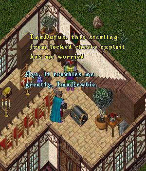
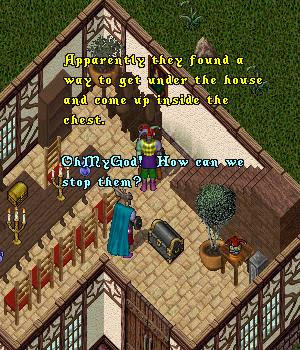
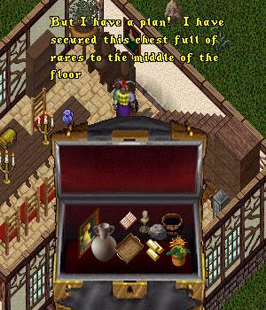
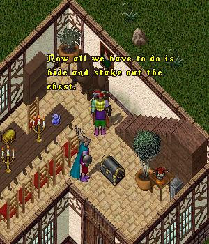
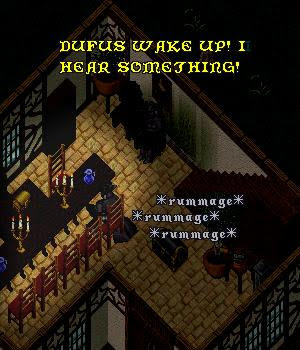
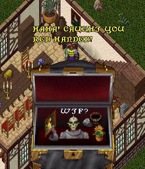
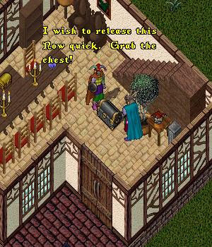
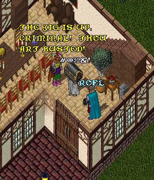
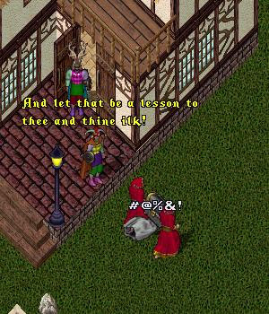
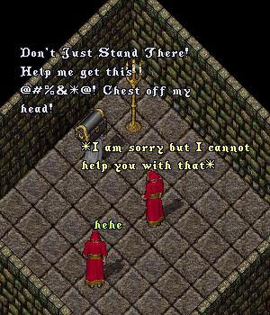

Episode 122: Poetic Justice. Well, it would appear that the exploit people were using to get into locked and secure chests has been fixed, let's hope so anyway. As usual OSI took the position of neither confirming or denying the bug, which while annoying is somewhat understandable in that it allows them to possibly trap some of the idiots using it while they are coming up with a fix. Anyway, when I heard thru the rumor mill that the bug involved players being able to alter their Z-position (height), I started getting these visions of people skulking around under the floors of our houses and coming up inside the chests. This toon is the result, hope you enjoy it :)




As night falls, we find ImaNewbie and ImaDufus hidden
in the house, awaiting any sign of a burglar.


Leaping into action ImaNewbie quickly opens the
chest revealing the exploiter. He quickly releases
the secure chest and together he and Dufus
lift the chest from the floor.


Having apprehended the thief, Ima pages the
GM's who arrive and take him into custody.

